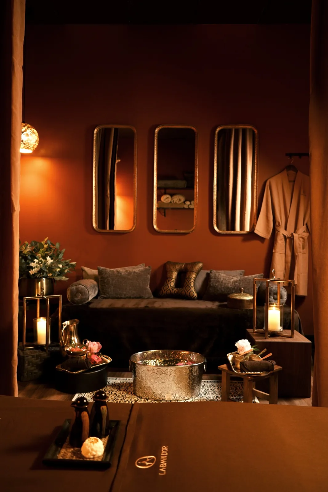

THAI WELLNESS · MONTREAL
Your experience
A Thai herbal ritual focused on scalp care and relaxation.
Ideal for
- Scalp relaxation
- Sensory break
- Herbal ritual
Choose your duration
- 45 min$80
- 60 min$100
Treatment durations shown on our website; Fresha displays 75–90 minute appointment slots. Confirm timing when booking.
All treatmentsYour Baan d’Or privileges
FIRST VISIT
The Golden Introduction
90 minutes for the price of 60. Signature or Thai Heritage rituals only.
Call us
LOYALTY PRIVILEGE
Your 10th ritual is complimentary
After nine visits, enjoy a complimentary 90-minute session. Conditions apply.
Learn more